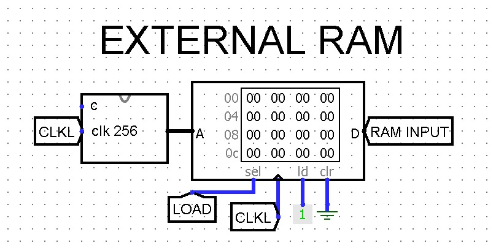

Assignment 14 — The Finished Machine
100 points | Week 14 | Logisim Checkpoint 7 + Canvas quiz + project status | Due Sunday 11/22, 11:59 pm
What you submit
| Part | What it is | How | Points |
|---|---|---|---|
| A | Logisim Checkpoint 7 — every class of instruction wired, the carry-in, END, the clock and the loader, and three test programs run | .circ file + 6 screenshots | 60 |
| B | Canvas quiz on the Week 14 pages | in Canvas: 10 questions, auto-graded | 30 |
| C | Project status — where your CPU stands, three weeks before the final project is due | the Project Status page, printed to PDF and uploaded | 10, complete/incomplete |
Week 15 is light and has no Logisim checkpoint. If you finish Checkpoint 7 early, the time after it is yours for the final project.
Part A — Logisim Checkpoint 7 (60 points)
Checkpoint 7 is graded on every class of instruction wired. Running MYSIM.txt is optional this week (and required for the A tier of the final project). Pages 1–3 explain every wire, and page 5, The Complete CPU, defines the finished control unit and CPU tab in one place; read them first.
Until now you have used only Wiring and Gates components, plus Week 11’s J-K flip-flop. Checkpoint 7 allows three built-ins, and only in these places:
- the built-in Counter (Memory folder), only inside the tab
COUNTER_256; - the built-in RAM (Memory folder), only on
CPU_TEST, as the external RAM; - the built-in Multiplexor (Plexers folder), only at your
RAM_16X16’si, selected byload.
And the Clock (Wiring folder) on CPU_TEST. Any other built-in from Memory, Plexers or Arithmetic anywhere in the file costs the “single file” points.
Tab CONTROL_UNIT — what changes
Two kinds of change: the new instruction classes (this table), and the final control section that takes over LOAD, MARS and RESET (the list after it; page 5, §14.17 draws the whole unit).
Add four inputs, fc, fa, fe and fz (the flags, 1 bit each), and three outputs, ram_s, c and end. Wire five more outputs of the class decoder you placed in Week 11 (each ANDed with NOT b7, as CLF is): LD, ST, DATA, JMPR, JMP and Jcaez. The whole table, with this week’s additions in bold:
| Output | = |
|---|---|
| pc_e | ( step1 OR (step4 AND DATA) OR (step4 AND JMP) OR (step4 AND Jcaez) ) AND clk_e |
| mar_s | ( step1 OR (step4 AND LD) OR (step4 AND ST) OR (step4 AND DATA) OR (step4 AND JMP) OR (step4 AND Jcaez) ) AND clk_s |
| ram_e | ( step2 OR (step5 AND LD) OR (step5 AND DATA) OR (step5 AND JMP) OR (step6 AND Jcaez AND match) ) AND clk_e |
| ir_s | step2 AND clk_s |
| pc_s | ( step3 OR (step6 AND DATA) OR (step4 AND JMPR) OR (step5 AND JMP) OR (step5 AND Jcaez) OR (step6 AND Jcaez AND match) ) AND clk_s |
| regb_e | ( (step4 AND ALU) OR (step5 AND ST) OR (step4 AND JMPR) ) AND clk_e |
| tmp_s | step4 AND ALU AND clk_s |
| rega_e | ( (step5 AND ALU) OR (step4 AND LD) OR (step4 AND ST) ) AND clk_e |
| acc_s | ( step1 OR (step5 AND ALU) OR (step4 AND DATA) OR (step4 AND Jcaez) ) AND clk_s |
| flags_s | ( (step5 AND ALU) OR (step4 AND CLF) ) AND clk_s |
| acc_e | ( step3 OR (step6 AND ALU AND NOT CMP) OR (step6 AND DATA) OR (step5 AND Jcaez) ) AND clk_e |
| regb_s | ( (step6 AND ALU AND NOT CMP) OR (step5 AND LD) OR (step5 AND DATA) ) AND clk_s |
| bus1 | step1 OR (step4 AND CLF) OR (step4 AND DATA) OR (step4 AND Jcaez) |
| ram_s | step5 AND ST AND clk_s |
| c | step5 AND ALU |
| opcode | ir bits 6–4, each AND (step5 AND ALU) — unchanged |
| end | the ir byte = 11001111: one AND of all eight bits, b5 and b4 through NOTs |
match = (fc AND b3) OR (fa AND b2) OR (fe AND b1) OR (fz AND b0): four ANDs into one 4-input OR, used only at step 6 (page 2, §14.6). Every other new term is a (step AND class) AND, ORed into a line that already exists.
The final control section (your instructor’s design, page 5):
- New inputs
load,marsandreset. - The stepper’s
clk=clkAND NOTload; its step 1 output is used asstep1AND NOTload. mar_s= (the table’s terms) ORmars.ram_s= (the table’s term) OR (loadANDclk_s).- The register decoders move inside the control unit, built as your instructor built them (page 5, “The register decoders, gate by gate”): remove the
ra,rb,rega_e,regb_eandregb_soutputs and theclk_e/clk_sANDs on those three lines; add threeDECODER_2TO4s (REG A on RA, REG B on RB, a third on RB); eight three-input ANDs (decoder line,rega_eorregb_e,clk_e) into four ORs maker0_e–r3_e; four three-input ANDs (decoder line,regb_s,clk_s) maker0_s–r3_swithreset. resetORed intoir_s,pc_s,acc_s,tmp_s,flags_sandr0_s–r3_s.- Optional, not graded: outputs
io,da,io_clk_e,io_clk_s(page 5).
Tab CTMP (new) — these pin names are exact
| Pin | Width | Direction | Meaning |
|---|---|---|---|
c | 1 | in | the carry flag, from FLAGS |
s | 1 | in | set — tmp_s |
o | 1 | out | the copied carry |
Inside: one MEM_1BIT instance (page 3, §14.9).
Tab COUNTER_256 (new, exception) — these pin names are exact
| Pin | Width | Direction | Meaning |
|---|---|---|---|
clk | 1 | in | the counter’s clock |
count | 8 | out | 0 to 255 |
Inside: one built-in Counter: Data Bits 8, Maximum Value 0xff, Action On Overflow Stay at value, Trigger Falling edge; its load, clear and count-enable inputs left unconnected (page 3, §14.11).
Tab CPU — what changes
- Delete the
clk_inandciinput pins. - Delete Week 13’s
runpin and its three ANDs, the test port (data,data_e,data_s,data_pc,data_ir,data_mar,data_ram,ram_reset) and theREG_SELECTinstance (the control unit decodes the registers now: wire itsr0_e–r3_soutputs to the four registers). - The clock: new input
clock;CLOCK’sclk_in=clockAND NOTend.clk,clk_eandclk_sgo straight to the control unit. - The carry-in: place a
CTMP; itscfrom FLAGS C, itssfromtmp_s. ALUci= CTMPoAND the control unit’sc. - Flags to the control unit: FLAGS C, A, E, Z to
fc,fa,fe,fz. - The RAM: its
s= the control unit’sram_s, itssa=mar_s. Itsicomes from a Multiplexor: select =load, input 0 = the bus, input 1 = new 8-bit inputram_input. - The loader: new inputs
loadandmars, both to the control unit; aCOUNTER_256whoseclk=clkANDload, itscountonto the bus through a controlled buffer enabled byload. - RESET: new input
reset, to the control unit and to your RAM’sreset. - Pull-downs: every pin that faces the bus is set to Pull Behavior: Pull Down — the bus-side pins of R0–R3, TMP, ACC, BUS1, the PC, the IR, the ALU (
a,b,ci,opcode, flags) and the RAM (address,i,o,reset), and thebusoutput. A bus nothing drives then reads00000000, which is how RESET writes 0 (page 5, item 2). - New outputs:
end,clkl(the clock’sclk),clk_e,clk_s. Recommended, for hex displays onCPU_TEST:bus,pc,ir,acc,r0–r3(8 bits each).
Tab CPU_TEST (new)
- One
CPUinstance. Edit theCPUtab’s appearance so its pins are easy to wire, as your instructor’s is on page 3. - A Clock to
clock. InputsLOAD(toload),RESET(a button, toreset) andMARS(tomars). An LED or outputEND; outputs showingclkl,clk_eandclk_s. - The external RAM: a second
COUNTER_256, itsclk=clkl, itscountto a built-in RAM’sA(Address Bit Width 8, Data Bit Width 8). RAMsel=LOAD, clock =clkl,ld= constant 1,clr= constant 0,Dto the CPU’sram_input. - Recommended: hex digit displays for the bus, PC, IR, ACC and R0–R3.

CPU_TEST.The three tests
Type each program’s bytes into the external RAM (right-click → Edit Contents), then load and run it by the procedure below. Page 4, §14.13 traces all three.
| Test | Bytes (hex, from address 00) | At END |
|---|---|---|
| A — memory and immediates | 20 1E 21 5A 11 02 CF | R0 1E · R1 5A · R2 5A · RAM[1E] 5A · PC 06 |
| B — jumps | 23 07 33 20 AA CF CF 40 0B 20 BB 21 01 CF | R0 00 · R1 01 · R3 07 · PC 0D |
| C — flags, Jcaez, carry-in | 60 20 FF 21 01 81 58 0A 22 EE 8B 51 0F 22 22 CF | R0 FF · R1 00 · R2 22 · R3 01 · C A E Z = 0 0 1 0 · PC 0F |
Load and run, every time
- Simulate → Reset.
LOAD= 1, before any tick.- Press
RESET; the hex displays all read00. - External RAM → Edit Contents: type the bytes (or Open a file).
MARS= 1.- Ticks Enabled until the bus reads
FF; ticks off. - Tick Once until
clkl= 0,clk_e= 1,clk_s= 0. MARS= 0, thenLOAD= 0.- Ticks Enabled until
ENDlights; ticks off.
Screenshots
| # | When | Expect |
|---|---|---|
| 1 | Test A: after step 3 (RESET) | PC, IR, ACC and R0–R3 all 00; END off |
| 2 | Test A: after step 6, right-click RAM_16X16 → View (then Simulate → Go Out To State to return) | bytes 00–06 = 20 1E 21 5A 11 02 CF; the rest 00 |
| 3 | Test A: after step 8 | clkl, clk_e, clk_s = 0, 1, 0; LOAD 0; MARS 0; bus = 00 |
| 4 | Test A at END | as in the table above |
| 5 | Test B at END | as in the table above |
| 6 | Test C at END, with FLAGS visible (a probe, or the CPU tab) | as in the table above |
Optional: a seventh screenshot of MYSIM.txt at END, R2 = 00011001. Not graded this week; it is the A-tier proof for the final project.
If a test ends wrong, page 4 says what each wrong value points to, and the Test Bench there traces the program one instruction at a time for comparison.
Points
| Criterion | Points |
|---|---|
CONTROL_UNIT classes: fc fa fe fz in; ram_s, c, end out; every class term as in the table; the match gated into step 6 only; end decoded | 16 |
CONTROL_UNIT final section: load, mars, reset in; stepper clock and step 1 gated by NOT load; mar_s OR mars; ram_s OR (load AND clk_s); register decoders inside (three-input ANDs with clk_e/clk_s), r0_e–r3_s out; reset into the nine sets | 8 |
CTMP (three pins, one MEM_1BIT) and the carry path: ci = CTMP AND c | 6 |
The loader on the CPU tab: COUNTER_256 and its buffer, the RAM input Multiplexor | 6 |
CPU tab: clock AND NOT end; pull-downs; RESET to the control unit and the RAM; run, the test port and REG_SELECT gone; the new outputs | 4 |
CPU_TEST: Clock, the three inputs, END, the external RAM and its counter | 6 |
| Six screenshots, matching the table (2 each) | 12 |
| Single file; built-ins only where the exception names them | 2 |
- One
.circfile — the same file you have added to since Week 2, now withCTMP,COUNTER_256andCPU_TESTtabs. - Pin names exactly as listed.
- Six screenshots, numbered to match the table.
Part B — Canvas quiz (30 points)
Ten questions on the Week 14 pages, 3 points each, auto-graded. No time limit. Two attempts; your higher score counts. Each question is drawn from two parallel versions, so a second attempt will usually look different. Opens Monday 11/16; closes Sunday 11/22, 11:59 pm.
The questions follow the pages in order: what LD and ST put on the bus; how DATA steps over its byte; which lines are high at a step; whether a conditional jump is taken; what JMPR and JMP do to the PC; the carry-in; END and the clock; the load-and-run procedure; encoding a jump; and the result of a short program. The widgets on each page are the best practice.
Part C — Project status (10 points, complete/incomplete)
Open the Project Status page in this week’s module. Say which tier you are aiming for now, which classes work, which tests you ran and what they gave, what is blocking you, and one question. Print it to PDF and upload it. It is complete when every section is answered, and you get written feedback on it either way. Honest answers get the most useful feedback: “Test C gives R3 = 00” is something your instructor can help with.